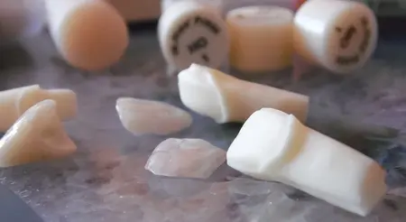

Predictibilitate
Analizam datele cazului si discutam elementele importante inainte de executie.
Laborator pentru medici si clinici stomatologice
CDL realizeaza lucrari protetice fixe pe dinti si implanturi, pe amprente clasice sau scanari intraorale. Ridicam si livram lucrarile in Bucuresti prin curier propriu si colaboram cu cabinete din toata Romania prin curierat rapid.

Despre CDL
CDL lucreaza exclusiv B2B. Nu este necesara deplasarea la laborator: cazurile pot fi preluate si livrate in Bucuresti sau expediate in siguranta din orice localitate din Romania.
Analizam datele cazului si discutam elementele importante inainte de executie.
Lucram atat cu amprente clasice, cat si cu scanari intraorale.
Construim relatii profesionale care pot creste de la un caz la o colaborare constanta.
Directii de lucru
Cum incepe colaborarea
Puteti incepe cu un singur caz. Pentru Bucuresti organizam preluarea si livrarea prin curier propriu, iar pentru restul tarii stabilim impreuna expedierea prin curierat rapid.
Propune un prim caz →Colaborare profesionala